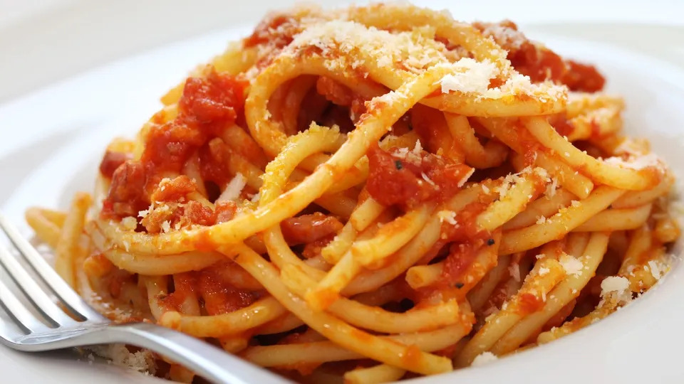
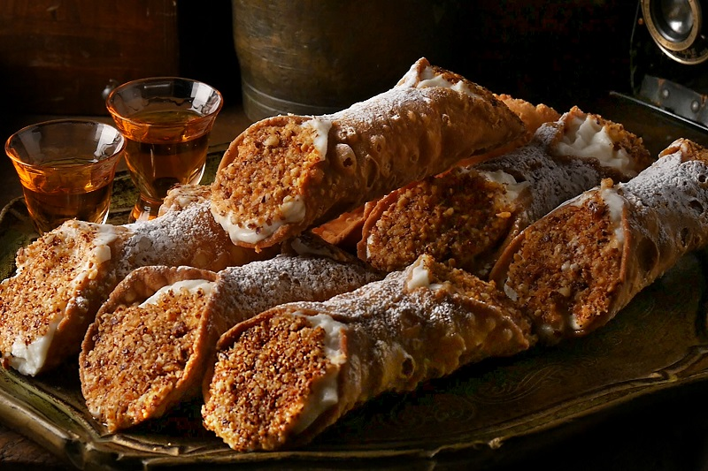

Espaguetis acompañados de una salsa de tomate, guanciale y queso pecorino.

Dulces en forma de tubo, elaborados con una masa crujiente y rellenos de crema dulce de ricotta. Se suelen decorar con pistachos, chocolate o fruta confitada.
